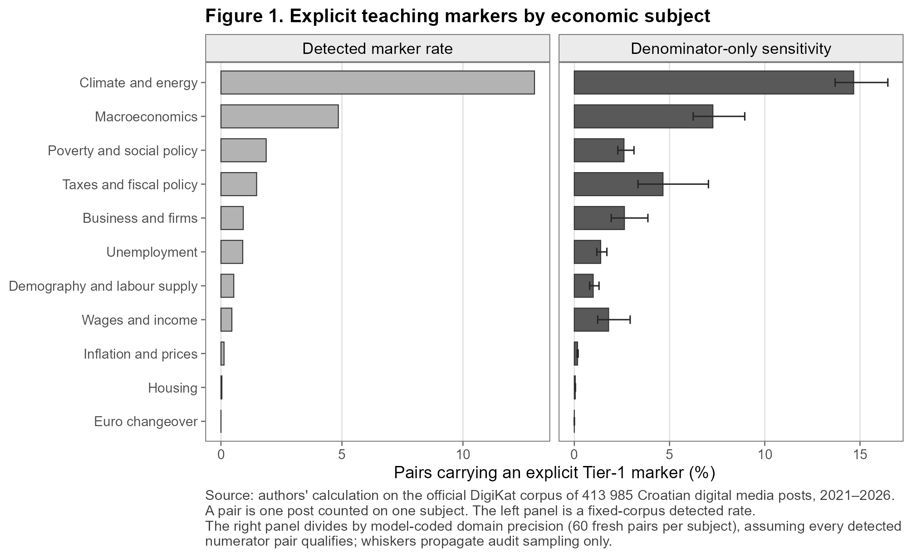
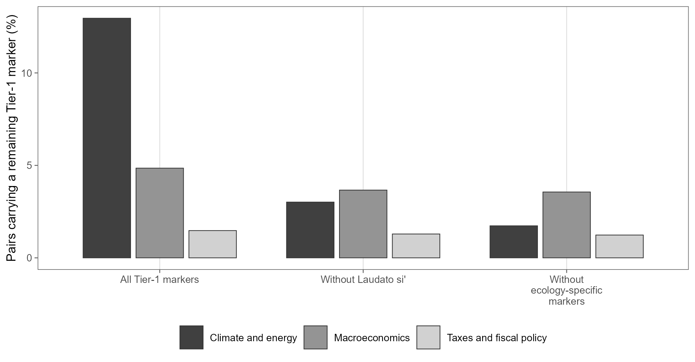
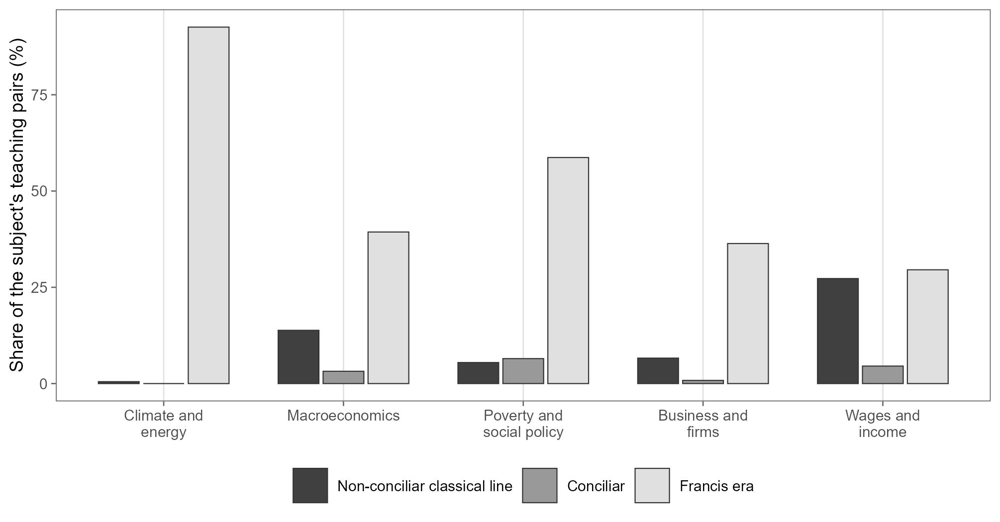
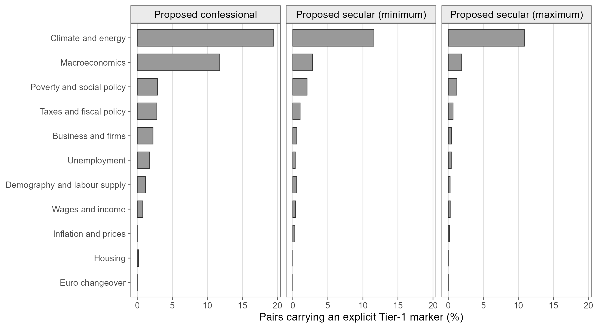

Socijalni nauk Crkve u javnoj raspravi o gospodarstvu
Nova službena baza pokazuje da vidljivost ovisi o odabranim oznakama: klimatsko vodstvo uglavnom nosi Laudato si’
Socijalni nauk Crkve više od stoljeća govori o radu, plaćama, vlasništvu, siromaštvu, javnoj vlasti i odgovornosti gospodarskih ustanova. Ova studija postavlja uže pitanje. Koliko se u hrvatskim digitalnim medijima izrijekom pojavljuju naslovi crkvenih dokumenata i specifični pojmovi socijalnoga nauka kada se govori o gospodarstvu?
Analiza je ponovno izvedena na novoj službenoj bazi DigiKat. Ispravljena je i važna pogreška ranijega postupka. Oznaka socijalnoga nauka sada mora biti blizu gospodarskoga izraza iz iste teme. Rezultat je znatno uži i oprezniji od ranije verzije rada. Glavni broj nije procjena svih katoličkih ideja u hrvatskoj javnosti, nego stopa izričito otkrivenih oznaka u tematski odabranom katoličkom korpusu.
Korpus i jedinica analize
Službena baza sadržava 413.985 objava od 1. siječnja 2021. do 11. lipnja 2026. DigiKat je korpus odabran prema katoličkim temama, a ne reprezentativan uzorak svih hrvatskih medija ili cijele javne sfere.
Analiza ima dva koraka.
U glavnom okviru opći religijski izraz mora biti udaljen najviše 220 znakova od izraza iz jedne od jedanaest gospodarskih tema. Tako dobivamo 66.374 objave i 79.439 jedinstvenih parova objava–tema.
Par ulazi u uži sloj samo ako se naslov dokumenta ili specifična oznaka socijalnoga nauka nalazi najviše 220 znakova od gospodarskoga izraza iz te iste teme. Ispravljeni sloj sadržava 1.093 objave i 1.290 parova.
Glavni omjer zato iznosi 1,62%: 1.290 otkrivenih parova s oznakom među 79.439 parova religije i gospodarstva. To je popisni omjer unutar opaženoga korpusa, pa uz njega ne prikazujemo Wilsonov interval kao da je korpus slučajni uzorak.
Opći religijski rječnik namjerno je neovisan o užem rječniku socijalnoga nauka. U provjeri granice okvira dopušteno je da sama oznaka socijalnoga nauka uvede par u analizu. Tada okvir raste na 66.394 objave i 79.500 parova, a uži sloj na 1.131 objavu i 1.351 par. Dodaje se 61 par, ali se redoslijed tema ne mijenja.
Svježe slijepe provjere mjerenja
Glavne provjere nisu preuzele stare kodove. Svježi Codexovi agenti dobili su samo slijepe kartice i ograničenu kodnu knjigu. Riječ je o modelskom, a ne ljudskom kodiranju. Točna inačica pozadinskoga modela i postavke dekodiranja nisu bile dostupne sesiji, što ograničava potpunu replikaciju.
Provjera brojnika obuhvatila je 150 pronađenih objava, stratificiranih prema razredu razdoblja susjednih oznaka, uključujući skupine bez datiranoga dokumenta i mješovite skupine, te prema koncentraciji izvora. Procijenjeni udio stvarne uporabe socijalnoga nauka iznosi 79,6% [72,4; 85,3]. Unaprijed postavljeni prag bio je 80%, pa je nalaz uvjetan, a ne prolazan.
Na istih 150 objava gospodarski izraz ima stvaran gospodarski referent u 77,1% slučajeva, a obje provjere zajedno prolaze u 62,8%. Tematski prag R2 ne prolazi ili se ne može potpuno ocijeniti. Porezi imaju ponderiranih 22,6%, dok euro, demografija i inflacija nisu zastupljeni u uzorku oblikovanom prema razdoblju i izvoru. Glavni prolaz za klimu od 95,5% također nije potvrđen u ponavljanju. Među šest ponovljenih klimatskih kartica glavno je kodiranje prihvatilo pet, a ponovljeno nijednu.
U cijelom ponovljenom uzorku slaganje na osi gospodarskoga referenta iznosi samo 76,7% uz κ = 0,420, ispod praga od 80%. Ostale tri osi ponavljanja prolaze, ali ukupna provjera stabilnosti zato ne prolazi.
Druga svježa provjera uzela je 60 parova iz svake gospodarske teme, ukupno 660. Procijenjeni udio stvarnih poveznica u nazivniku iznosi 52,7% prema glavnoj i 44,0% prema strožoj kodnoj odluci. Ako se smanji samo nazivnik, uz pretpostavku da je svaki od 1.290 parova u brojniku valjan, ukupni omjeri rastu na 3,08% i 3,69%. To su scenariji osjetljivosti nazivnika, a nisu ispravljena prevalencija. Provjera brojnika provedena je na objavama, dok je nazivnik provjeren na parovima. Njihovo izravno množenje miješalo bi jedinice i strukture pogreške.

Klima vodi samo uz zadani rječnik
Najvišu otkrivenu stopu ima klima i energetika, i to 12,96% (202 od 1.559 parova). Slijedi makroekonomija s 4,85% (94 od 1.938). Siromaštvo i socijalna politika imaju najviše otkrivenih parova, 586, ali zbog mnogo većega nazivnika stopa iznosi 1,87%.
Klima ostaje prva u svih 25 od 25 provjera koje zadržavaju isti rječnik. To vrijedi nakon uklanjanja bliskih i naslovnih duplikata, stranih objava, metaforičkih i Caritasovih slučajeva, po odvojenim tokovima prikupljanja, nakon uklanjanja najvećih izvora i pod različitim prijedlozima skupina medija. To pokazuje robusnost na ispitane promjene sastava korpusa.
Međutim, provjera samoga konstrukta mijenja zaključak.
bez oznake Laudato si’ makroekonomija vodi s 3,66%, a klima pada na 3,01%.
bez triju ekološki specifičnih oznaka, a to su Laudato si’, Laudate Deum i integralna ekologija, makroekonomija vodi s 3,56%, a klima pada na 1,73%.
Ista se promjena pojavljuje u scenariju osjetljivosti nazivnika. Prema tome, najjači nalaz nije da je socijalni nauk kao cjelina usmjereniji na klimu nego na starije gospodarske teme. Nalaz je uži. Ekološki dokumenti, a osobito prepoznatljiv naslov Laudato si’, iznimno su vidljiva javna oznaka.

Razdoblja dokumenata dodjeljuju se svakom paru
Razdoblje se ne preuzima s razine cijele objave. Dodjeljuje se zasebno svakom paru objava–tema prema naslovima dokumenata uz tu gospodarsku temu. Tako naslov Laudato si’ uz klimu ne može odrediti razdoblje neke druge teme u istoj objavi.
Od 1.290 parova, njih 705 ima Franju kao jedino razdoblje datiranoga dokumenta, uz mogućnost da sadržavaju i nedatirane pojmovne oznake. U klimi je takvih 187 od 202 para, odnosno 92,6%. Skupina “klasična ne-koncilska linija” odnosi se na unaprijed određeni skup naslova, a ne na neprekinuto kalendarsko razdoblje. Pojmovne oznake, uključujući naziv Kompendija prema ovoj konvenciji, nemaju dodijeljeno papinsko razdoblje.

Ovaj prikaz podupire tvrdnju o vidljivosti nedavnih ekoloških naslova, ali sam ne razdvaja učinak novosti dokumenta, javne prepoznatljivosti, izvora teksta ili uredničkoga odabira.
Skupine izvora samo su prijedlozi
Oznake “konfesionalni” i “sekularni” potječu iz automatiziranoga, još nepotvrđenog prijedloga klasifikacije izvora. U predloženoj konfesionalnoj skupini stopa klime iznosi 19,47%, a makroekonomije 11,76% (omjer 1,66). U užoj predloženoj sekularnoj skupini omjer je 4,09, a u najširoj 5,68.

Te se razlike smiju čitati samo kao osjetljivost na prijedlog grupiranja. Budući da oznake nisu ratificirane i nacrt je opažački, rezultat ne dokazuje granicu crkvenih i sekularnih medija, urednički odabir ni uzročni proces “prevođenja”.
Što stari skup može reći o siromaštvu
Raniji stratificirani skup imao je 555 redaka. U službenoj bazi po stabilnom identitetu ostaje 296, u ispravljenom povezanom sloju 268, a 148 je označeno kao stvarna poveznica. U tablici rukopisa prikazuju se samo teme s najmanje deset takvih poveznica, ukupno 126 jedinica.
Među 77 poveznica siromaštva i socijalne politike 26,0% je označeno kao pomoć/djelovanje, 19,5% kao strukturna kritika ili načela socijalnoga nauka, 6,5% kao Crkva u ulozi gospodarskoga aktera, a 48,1% kao pobožno ili preostalo. Oznake su nastale u tri slijepa prolaza jedne obitelji jezičnih modela.
Taj skup nije izvučen za procjenu zastupljenosti registara. Njegova kodna knjiga ne mjeri prava, pravne zahtjeve ni jezik ovlaštenja. Zato nova verzija rada odbacuje staru tvrdnju da u raspravi o siromaštvu prevladava “jezik pomoći” nad “jezikom prava”. Za takav bi zaključak trebao novi vjerojatnosni uzorak, izravna kodna knjiga i neovisni ljudski koderi.
Kako čitati zaključak
Studija pouzdano opisuje koliko je unaprijed određeni rječnik otkriven u opaženom službenom korpusu. Ne procjenjuje sve argumente spojive sa socijalnim naukom, njihov utjecaj na politiku ili razloge zbog kojih je urednik objavio neki izraz.
Najoprezniji sažetak glasi ovako.
izričite oznake socijalnoga nauka nalaze se u 1,62% parova religije i gospodarstva u ovom korpusu,
zbog uvjetne preciznosti brojnika, nepotpunog/neuspjelog R2 praga i neuspjele osi ponavljanja nema potpuno ispravljene procjene prevalencije parova,
klima je prva pod zadanim rječnikom i u 25 provjera sastava, ali vodstvo nestaje bez Laudato si’ ili skupine ekoloških oznaka,
usporedbe izvora i registri siromaštva ostaju istraživački, a ne uzročni ili populacijski nalazi.
Način prikupljanja promijenjen je 2024., a od veljače do svibnja te godine nema uporabljivog teksta u izvornom toku. Rad zato ne procjenjuje vremenski trend. Godina 2026. završava 11. lipnja.
Cijeli rad
Prerađeni rukopis “Construct-dependent visibility of Catholic social teaching: Detected markers in Croatia’s Catholic-topic digital-media corpus, 1 January 2021–11 June 2026” dostupan je u cijelosti.
Sve tablice i slike generiraju se iz agregatnih izlaza studije. Sadržaj korpusa, prikupljanje, pravilo uključivanja i profil izvora opisani su na stranici Baza podataka.
Status
Prerađeni radni rukopis (2026-08-11), autori Luka Šikić i Petra Palić, priprema se za časopis. Dio je drugoga izlaznog toka projekta, koji obuhvaća tematske studije i radove. Popis je na stranici Projektni raspored.